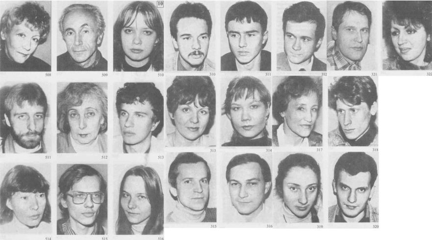
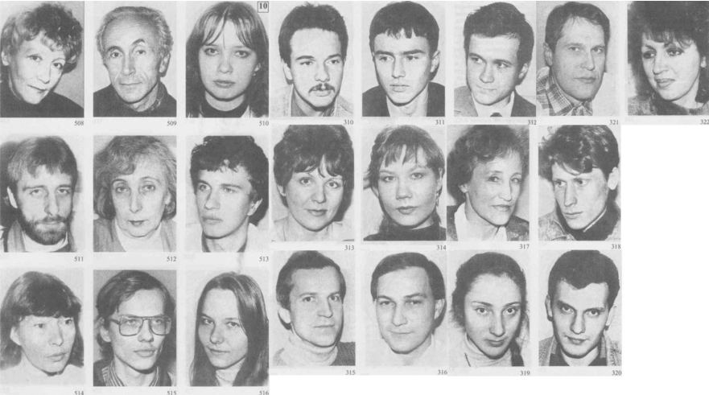

Photographs of Types by Filatova¶
These particular portraits are from Ekaterina Filatova’s book “Personality in the Mirror of Socionics” (2001).
Foreword¶
About Filatova’s portraits - from Wikisocion:
It should be noted that Ekaterina Filatova did not use visual identification (“V.I.”) to diagnose types. She relied on questionnaires and interviews to establish socionics types and later began to notice similarities between people of the same type, which she tried to capture in her type photo albums.
Who are the people in the pictures? from Socioniko.net:
Visitors of our site often ask us whether the people whose pictures are placed together with type descriptions have been “typed” correctly. OK, we answer.
These portraits have been photographed by Yekaterina S. Filatova, a socionist from St. Petersburg, since 1991. She gave us her permission to place some of her pictures at our site. She did not use any “visual identification” methods – she is rather much critical towards such methods, and never wants to “type” pictures which some people send to her. On the contrary, she first determined the type of the person (by interviewing, in course of long contacts, etc.) and only then, when this person expressed his/her agreement with the type description and his/her permission for being photographed, she made his/her pictures in several standard perspectives (which allowed comparing pictures of different people with each other). In addition, she often received feedback from these people and kept contacts with them, since many of them were her former students, colleague professors or even practicing socionists. If anybody later expressed his doubts about the correctness of his/her type identification, then his/her pictures were removed from the collection to a separate folder marked “dubious” for future verification. The total number of portraits made by her exceeds several thousands, and the most reliable of them have been published in her books.
Later she compared her pictures, and discovered so-called “quasi-twin” series within each of the 16 types. However, they were similar not as much by facial traits (form of nose, lips etc.) as by their characteristic mimicry (facial expressions). For this reason, we strongly disagree with the approach of Sergei Ganin, the owner of ₪₪₪ Socionics - The New Psychology ₪₪₪, who determines types of celebrities using the method ‘he/she facially reminds me a person whose type is XYZ”. As a part of psychology, socionics should use scientific approach of studying people characters, instead of physiognomics and other pseudo-sciences.
 
